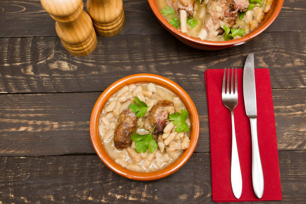
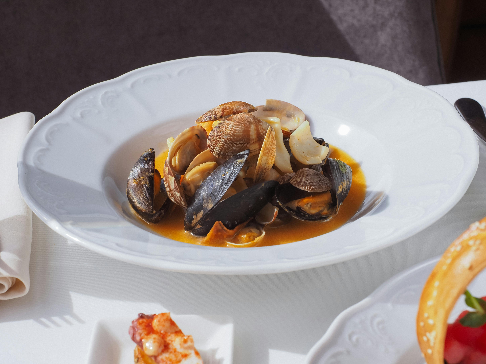
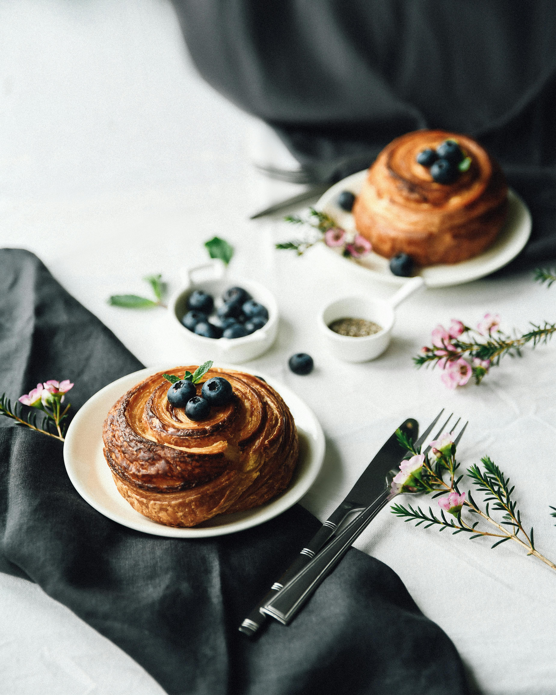

Saveurs de France
Un web documentaire au cœur des traditions culinaires françaises
Chaque région cache un trésor. Chaque plat raconte une histoire. Ce documentaire vous emmène là où la France a encore le goût de ses origines.

Vidéo d'introduction
Comment le plat peut-il incarner l'identité d'un région ?
Spécialités emblématiques
Un patrimoine culinaire d'une richesse inégalée, façonné par les terroirs et les traditions.

Cassoulet
Mijoté de haricots blancs, confit de canard et saucisse. Plat emblématique du Sud-Ouest.
Occitanie
Bouillabaisse
Soupe de poisson traditionnelle, riche en saveurs méditerranéennes, safran et rouille.
Provence
Kouign-Amann
Gâteau breton au beurre salé et au sucre, caramélisé et incroyablement gourmand.
Bretagne📌 Carte interactive des terroirs
Explorez la richesse gastronomique française à travers notre carte interactive immersive.
🍽️ À propos de ce documentaire immersif
Ce web documentaire interactif vous propose un voyage à travers les régions françaises pour découvrir les spécialités culinaires, les producteurs passionnés et les traditions qui façonnent notre patrimoine gastronomique. Cliquez sur la carte pour une expérience augmentée.
✨ Survolez la carte : elle s'anime et vous invite à l'exploration.
🎬 Immersion dans les saveurs Occitanes
Découvrez notre immersion dans un restaurant et une confisserie d'exception.

🍽️ Restaurant Bouillon Capitole (Toulouse) & Confisserie Paradis Gourmands
Pourquoi ce reportage ? Nous avons choisi d'explorer nous-mêmes les saveurs Toulousaines en visitant ces deux endroits dont les produits reflètent les spécialités culinaires et plus globalement la culture toulousaine et donc occitane.
📅 Reportage réalisé en Mi-Mai 2026 par :
- - Maelys PRATI
- - Intisar BINTI MOHAMMAD ZAÏDIR
- - Yao DOSSAVI